září 2024
Nový školní rok od 16. 9. podle nového rozvrhu.
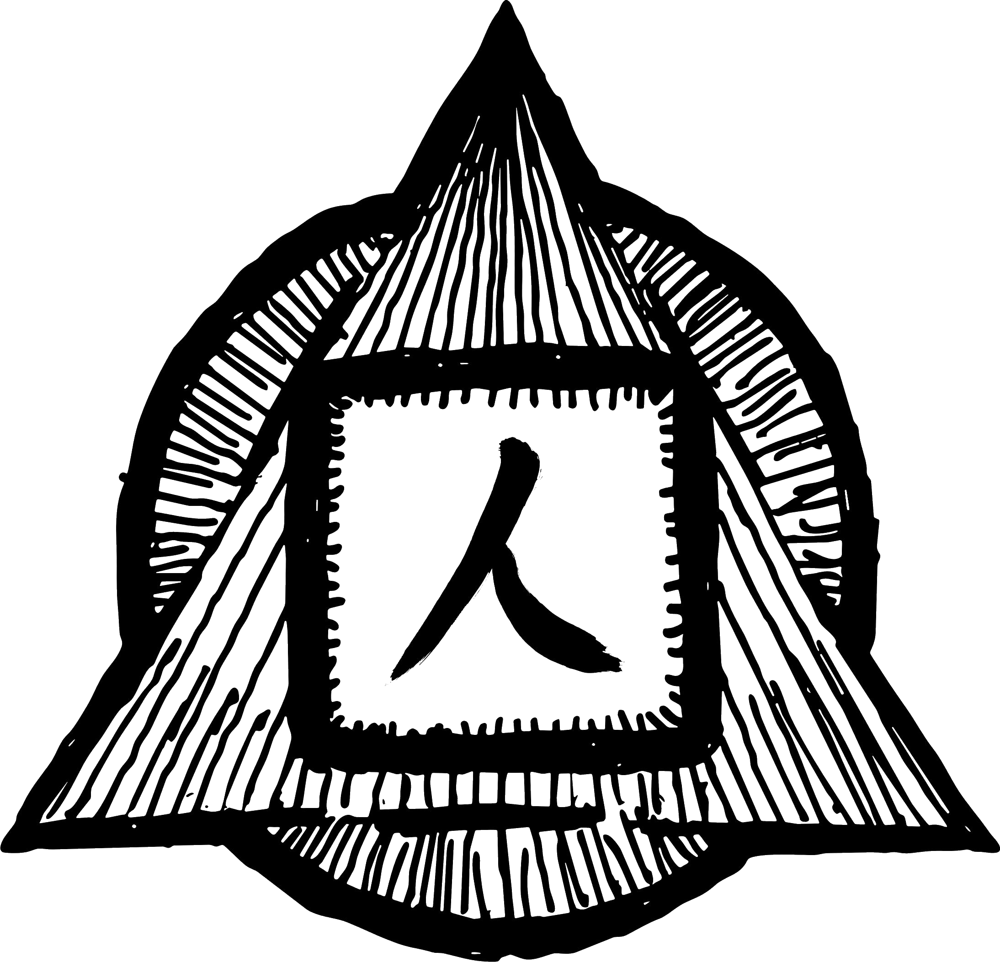
Aikido a jóga v Říčanech, od roku 2004
nenásilná cesta
→ táhněte nebo scrollujte doprava mezi kapitolami, dolů uvnitř nich
2025–2003. Nejnovější nahoře, přesně jak to dřív dělal starý web — nic se nemaže. Všechny příspěvky verbatim, s dobovými fotkami a odkazy tam, kde se dochovaly.
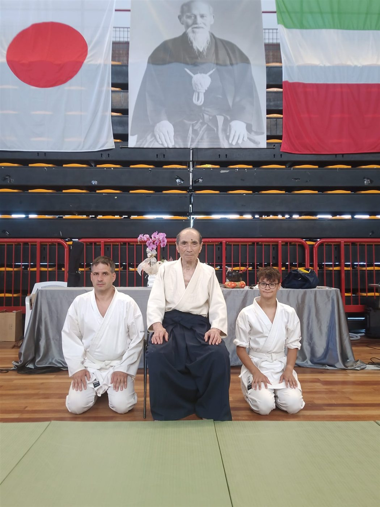
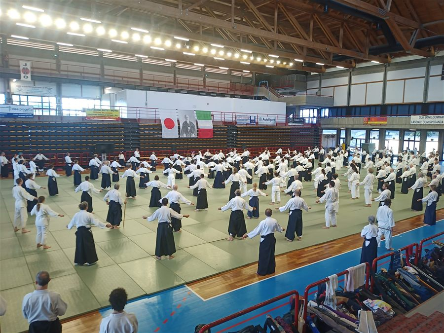
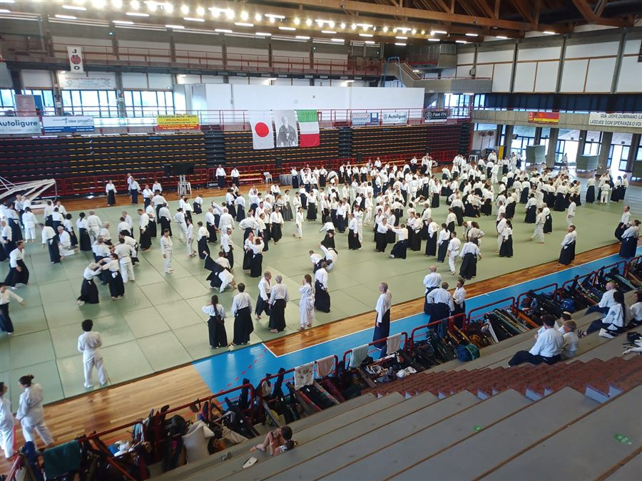
Nový školní rok, cvičit se začíná od 15. 9., k tomu pár fotek z letní školy v Itálii.
Nový školní rok od 16. 9. podle nového rozvrhu.
Na hlavní stránce se poprvé objevuje dnešní plné znění filosofie dobrovolného poplatku — „od 0 Kč výše“.
Nový školní rok od 11. 9., stejný rozvrh jako loni.
Novoroční přání a návrat na cvičení 5. 1. po vánoční pauze.
Tak už je to zase tady, poslední týden cvičení před letními prázdninami. Krásné léto všem.
Velikonoční prázdniny:
Čtvrtek 14.4.2022 proběhne pouze ranní cvičení jógy.
Pondělí 18.4.2022 prázdniny (necvičíme)
NÁBOR PÍĎAT NA NOVÉ POLOLETÍ:
DĚKUJEME MĚSTU ŘÍČANY za přidělení finanční dotace na provoz naší organizace v roce 2021 ve výši 75000,- Kč.
NOVÝ ROZPIS CVIČENÍ OD 31.1. 2022
pondělí: 8:15-9:35 jóga 16:00-17:20 děti aikido 17:45-19:05 jóga 19:15-21:00 aikido
čtvrtek: 8:15-9:35 jóga 16:00-17:00 píďata 17:30-18:50 aikido děti 19:15-21:00 aikido
AIKIVANDR NA CHATĚ Bylo to supr. Díky.
V omezeném režimu cvičení je poplatek za pololetí nyní jen 2800,-Kč. V rámci "Září otevřených dveří" je pro nově příchozí cvičení první měsíc zdarma a Sleva 20% na pololetní poplatek.
Letošní Aikivandr se bude konat od pondělí 9. do pátku 13.8.
Cvičit začínáme druhý týden v září.
Máme pro Vás a Vaše děti týden otevřených dveří od 7. 9. do 11.9. Přijďte se podívat, nejlépe i zacvičit kdykoli podle rozpisu hodin. Pro nové členy se slevou 20%.
V době od 13. do 15. července nebudou probíhat žádná cvičení. Jedeme na stáž.
Cvičení budou pokračovat i v průběhu července. Podle zájmu se však může operativně pozměnit rozpis hodin.
Od začátku června pokračujeme ve všech našich cvičeních podle rozvrhu.
ZPRÁVA PRO ČLENY! Prosím všechny členy ať se vyjádří na fóru, jak a kdy budete chtít cvičit. Začněme diskusi, je to na vás. Díky.
Cvičit začínáme od 9. září podle stejného rozvrhu jako minulý rok.
Aikido výprava na dětský den.
Máme pro Vás a Vaše děti týden otevřených dveří od 10. 6. do 14.6. Přijďte se podívat, nejlépe i zacvičit kdykoli podle rozpisu hodin. V tomto týdnu bude možné i přihlásit děti do našeho aikido oddílu na nový školní rok, nebo první pololetí se slevou 20%.
DĚKUJEME MĚSTU ŘÍČANY Usnesením Zastupitelstva města Říčany ze dne 10. 4. 2019 nám byla přidělena finanční dotace na provoz naší organizace ve výši 95 700,- Kč.
Zveme vás na víkendový seminář na téma pranajáma ve Střílkách.
Od 2. do 4. února
O hlubším účinku pranajámy na tělo, mysl a duši.
Baionšómjó v libuši / OVERTONE
20.10. 2018 18:00 Přineste si polštář na sezení a pojeďte si s námi do Libuše zazpívat.
Pojeďte s námi na zimní školu 17. a 18. listopadu na Žižkově
Jarní cvičení v přírodě Každé první pondělí v měsíci.
Vánoční čaj o páté
DĚKUJEME MĚSTU ŘÍČANY. V roce 2018 byl provoz naší organizace spolufinancován z grantu města Říčany, částkou ve výši 91 300,-. Celá částka byla použita na částečnou úhradu nájemného.
Od 11.9. ZAČÍNÁME CVIČIT V ČASECH JAKO LONI.
PÁR FOTEK Z ČERVNOVÉ LEKCE
MÁME NOVÉ STRÁNKY! (Kdyby se vám při prohlížení vyskytl jakýkoliv problém, neváhejte nás kontaktovat a my problém v nejbližší době odstraníme.)
Nastává opět stěhování - nyní pouze webové stránky :-)
NOVÉ STRÁNKY jsou zde: http://www.aikidoricany.com
TÝDNY OTEVŘENÝCH DVEŘÍ. Nábor nových žáků na druhé pololetí začíná. První i druhý týden v únoru se můžete vy i vaše děti přijít podívat, a třeba si i na zkoušku zacvičit aikido nebo jógu.
DĚKUJEME MĚSTU ŘÍČANY. V roce 2016 byl provoz naší organizace spolufinancován z grantu města Říčany, částkou ve výši 96 310,-. Celá částka byla použita na částečnou úhradu nájemného.
Nově zavádíme možnost pro všechny dospělé cvičence Aikido i Jógy platit měsíčně.
Měsíční poplatek je 800,-Kč
PROGRAM START NA CESTĚ -20%
Pro koho je program určen?
Pro lidi ve věku cca 20 - 30 let, kteří většinou v tomto věku startují do samostatného života. Tento program se týká také všech nově příchozích nad třicet let, po dobu jejich prvního roku cvičení Aikido i Jógy.
Co tento program obsahuje?
20% slevu na kurzovném, viz. ceník.
Nábor nových cvičenců Aikido pro dospělé: každé úterý v září a říjnu od 19.15 h.
Cvičení JÓGY a AIKIDO pro dospělé začínají v pondělí 5.9. podle stejného rozvrhu jako minulý školní rok. Cvičení pro děti začínají v týdnu od 12.9. také podle stejného rozvrhu.
DĚKUJEME MĚSTU ŘÍČANY. V roce 2015 byl provoz naší organizace spolufinancován z grantu města Říčany, částkou ve výši 51200,- Celá částka byla použita na částečnou úhradu nájemného.
Byl upraven rozpis hodin:
OD ZÁŘÍ OPĚT NA NOVÉ ADRESE: Od 7. září začínáme cvičit v nové tělocvičně v Domově Pod Kavčí Skálou na adrese: Marie Pujmanové 2046, 25101 Říčany.
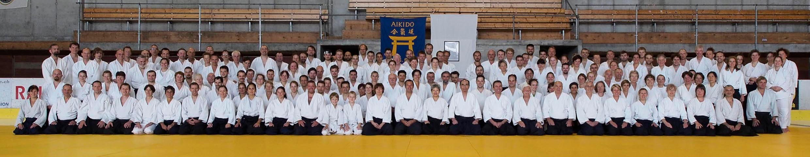
V červenci 5-11.7.2015 se někteří z nás vypravili do Saignelegier ve Švýcarsku na stáž senseie Hiroshi Tady (9.dan):
Česká výprava:
O víkendu 24-26.10.2014 se někteří z nás zůčastnili oslavy 20 výročí Slovenské Asociace, kde stáž vedli Ueshiba Mitsuteru (Waka Sensei), AsaiKatsuaki (8.dan) a Quaranta Michele (6.dan).
OSLAVA VÝROČÍ 10 LET AIKIDA V ŘÍČANECH proběhla ve čtvrtek 23.10.2014 i s cvičením aikida pod vedením našeho tehdejšího učitlele Michala Lachima Šípa (3. dan aikikai).
Fotografie Olivovny:
VELKÉ RADOSTNÉ OZNÁMENÍ: Od září budeme cvičit ve všech našich pravidelných časech v krásné tělocvičně v Olivovně.
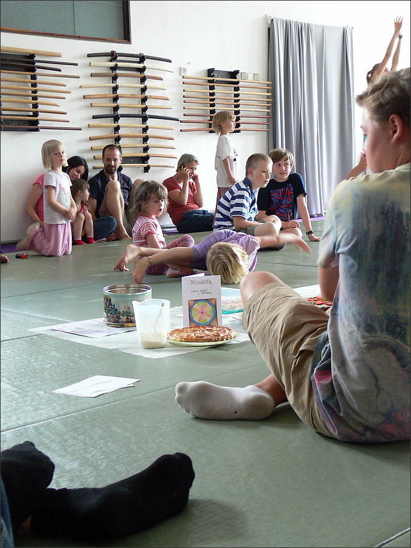
A zde jsou fotky ze soutěže o nejlepší koláč 2014:
PŘÍMĚSTSKÝ TÁBOR POŘÁDANÝ os. AIKIDO KENKYUKAI ŘÍČANY Letošní prázdniny budou mít děti znovu možnost prožít volné dny u nás v DOJO NA CESTĚ při cvičení a hrách na téma Aikido a Jóga. Mohou se těšit např. na skládání origami, hry na téma telepatie a práce s energií. Také míčové hry, stolní tenis a bedminton u nás v DOJO. Za pěkného počasí výlety do okolní přírody a návštěva indiánského týpí, vaření na ohni táborové hry a jiné tábornické dovednosti. Možností je tedy víc než dost. Děti povede nejoblíbenější lektorka a dva asistenti z minulých prázdnin. Strava: oběd a dvě svačiny, pitný režim. Termín: 7.7. - 11.7.2014 8:30 - 9:00 odevzdání dětí na Dojo 16:30 - 17:00 vyzvednutí dětí na Dojo Ceny: Celý týden: do konce června 2700,-Kč Záloha 1 700,- do konce května - sleva 200,-Kč doplatek v pondělí při odevzdání dětí. Jeden den: 800,-Kč Koordinátorka projektů: Karolína tel.604731322, email: carol.ho@volny.cz
Již byly přijaty čtyři děti na slevu.
V této sezoně můžeme přijmout 10 dětí za desetiprocentní cenu, tj. 700,-Kč na školní rok. Týká se dětí ze slabých sociálních poměrů..
PRVNÍ TÝDEN V ZÁŘÍ ZASE ZAČÍNÁME.
Poslední týden v srpnu (od 26. do 30.8.) se opět koná Aikido tábor pro děti.
Soutěž o nejlepší koláč 2013 se konala v pátek 14.6.
Další fotky zde.
PŘÍMĚSTSKÝ TÁBOR pořádaný AIKIDO KENKYUKAI ŘÍČANY o.s. Letošní prázdniny budou mít děti poprvé možnost prožít volné dny u nás v DOJO NA CESTĚ při cvičení a hrách na téma Aikido a Jóga. Mohou se těšit např. na kaligrafiii, kterou si budou průběžně zkoušet a na konci týdne každé dítě dostane tričko na které si samo vytvoří kaligrafii AIKIDO, skládání origami, hry na téma telepatie a práce s energií. Také míčové hry, stolní tenis a bedminton u nás v DOJO. Za pěkného počasí výlet na kole cca2km a koupání v sedmi metrovém bazénu v příjemném domácím prostředí zahrady a další cca3km návštěva indiánského týpí, vaření na ohni a jiné tábornické dovednosti. Možnost kontaktu s domácími zvířaty - ovce, koza, poník, oslík... Možností je tedy víc než dost. Děti povedou lektoři a lektorky, kteří u nás pracují s dětmi již mnoho let. Strava: oběd a dvě svačiny, pitný režim. Termíny: všechny prázdninové týdny mimo prvního a posledního, vždy od pondělí do pátku 7:30 - 9:00 odevzdání dětí na Dojo 16:00 - 17:00 vyzvednutí dětí na Dojo Ceny: Celý týden: 2 500,-Kč Záloha 1 500,- do konce května - sleva 300,-Kč doplatek vždy v pondělí při odevzdání dětí. Jeden den: 700,-Kč Č.ú. pro posílání záloh: 2338507043/0800. Pro přihlášení můžete použít tuto přihlášku nebo údaje zaslat e-mailem koordinátorce prokektů Karolíně: carol.ho@volny.cz (tel. 604731322).
Aktuální stáže aikida v Praze a okolí: - Ulli Kubetzek (6.dan) So 6.4. až Ne 7.4. 2013, ČFA, Lublaňská 20, Praha 2. - Bernard Caloz (6.dan) - So 11.5. až Ne 7.5. 2013, ČAA, Na Balkáně 812, Praha 3.
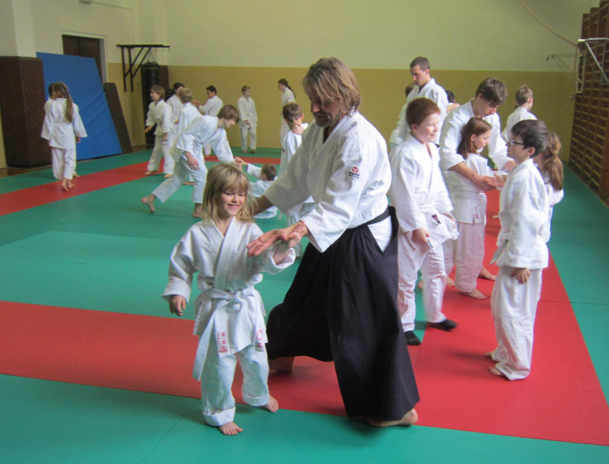
Nový odkaz na fotky z dětské stáže.
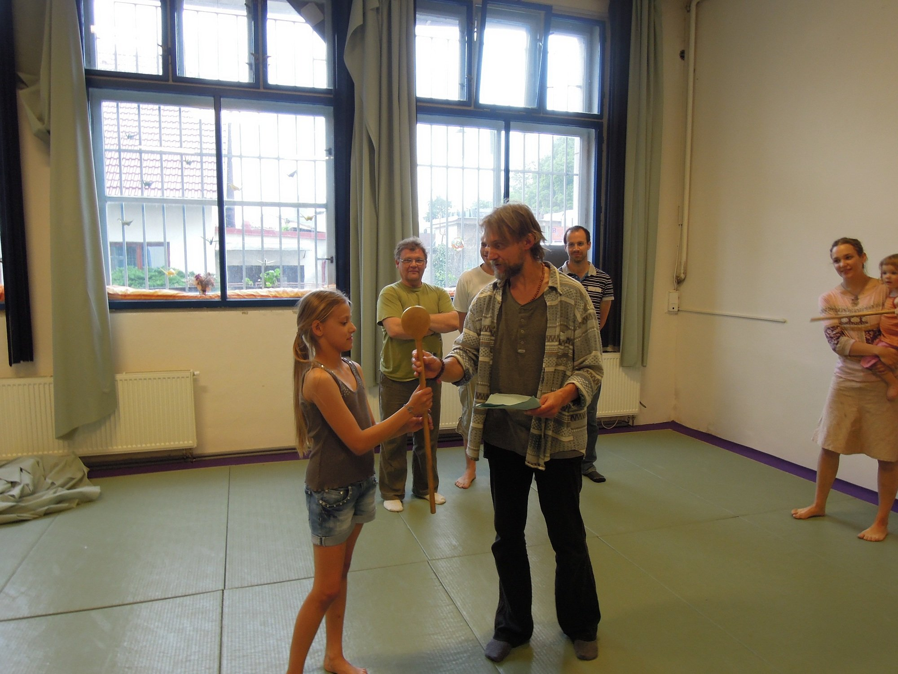
Před prázdninami proběhl čtvrtý ročník soutěže "O nejlepší ... tentokráte opět koláč". A stejně jako minule byly připraveny ceny v podbě celoročních permanentek na cvičení pro dospělé i děti zdarma. Další foto: lidi2 a lidi3. Vítěz děti: vítez, koláč a recept. Vítěz dospělí: vítez, koláč a recept.
Cvičení Aikido pro předškolní děti a prvňáčky (cca 4-7let) PÍĎATA opět začíná. Každé úterý nebo čtvrtek od září, vždy od 16:00 do 17:00h.
Na webové stránky byl umístěn aktuální ceník.
V srpnu 2012 (ve třech termínech, od 13. do 31.8.) se konal Aikido tábor pro děti. Více informací je k dispozici na odkazu.
V sobotu 21.ledna 2012 proběhla na Balkáně dětská stáž Aikido.
Aikido Říčany a Dojo Na Cestě Vás srdečně zvou na: PIKNIK NA CESTĚ v pátek 9. listopadu 2011 (předvečer úplňku) od 19.30. Večerem Vás budou provázet Miroslav Píďa Skala - kytara, zpěv a Štěpán Holoubek - rytmika. Vemte si sebou piknikové košíky(plné), deky na sezení a pestrobarevné oblečení. Vstupné je dobrovolné. Výtěžek akce bude použit na zřízení tématické knihovny - filozofie, spiritualita, jóga, aikido, tchaj ti. Hodně štěstí a zdraví Vám přeje za občanské sdružení Aikido Kenkyukai Říčany
Cvičení Aikido pro předškolní děti začíná. Od prvního úterý v listopadu tj. 1.11. začínáme cvičení na téma Aikido a Jóga pro předškolní děti cca 4 - 6let, s učitelem který u nás cvičí s dětmi již od počátků našeho sdružení a je certifikovaným lektorem jógy. Cvičení bude probíhat zatím jednou v týdnu, každé úterý, vždy od 15.00 do 16.00h. Děti si tak budou zvykat na práci v kolektivu a získávat správné morální a etické návyky, a také se zbavovat strachu a získávat větší sebejistotu. Cena: 2200,- do konce školního roku, nebo 150,- jedno cvičení.
Na webové stránky byl také umístěn aktuální ceník.
V červnu proběhlo další natáčení ze kterého vznikly čtyři samostatné filmy (aikido, tchaj-ťi čchüan, jóga a aikido dětí) a ty byly umístěny na příslušné podstránky.
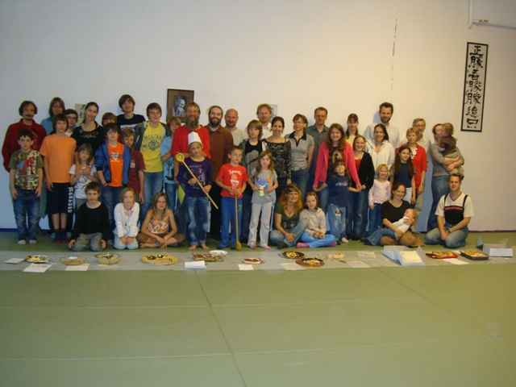
V pátek 27.5.2011 proběhl třetí ročník soutěže "O nejlepší ... tentokráte koláč". A stejně jako minule byly připraveny ceny v podbě celoročních permanentek na cvičení pro dospělé i děti zdarma. Nejpovedenější recepty a recpety na nejpovedenější koláče (vítězné koláče jsou pod čísly 02 a 03) jsou zde: 01, 02, 03, 04, 05, 06, 07, 08, 09-12, 12-14 a 15.
V srpnu se bude konat Tradiční týdenní prázdninový program pro děti (dva termíny: 15.-19.8.2011 a 22.-26.8.2011).
Začátkem června u nás probíhalo natáčení a nyní můžete shlédnout výsledek prezentující naše dojo:
Dojo na Cestě from Tomáš Lénárd on Vimeo.
V pátek 28.5.2010 proběhl již druhý ročník soutěže "O nejlepší ..." - tentokrát se jednalo o "dort" :-) A stejně jako minule byly připraveny ceny v podbě celoročních permanentek pro dospělé i děti zdarma.
O víkendu 22-23.5.2010 proběhla akce Prožitkové zpívání.
O víkendu 20-21. 3. 2010 proběhlo u příležitosti oslavy 5-ti let cvičení Aikido v Říčanech SEMINÁŘ pod vedením učitelů R. Skupého (3.dan), M.Kodyma (5.dan) a R. Růžičky (4.dan). Fotografie by se tu měly brzy objevit.
Tchaj-ři čchüan. Vedle aikida a jógy třetí pravidelná disciplína skoro celou první dekádu — v pondělí 17:40–19:00 a ve středu 19:30–20:50. „Umění, jak měkkostí zvládnout tvrdost, klidem agresivitu a jak jemností překonat hrubost.“ V červnu 2011 o něm vznikl krátký film. Beze zmínky o důvodu z webu zmizelo mezi lety 2015 a 2017.
zmizelo z webu, dle historie.htmlMeditace, zpívání Óm a pránajáma. Měsíční setkání — vždy poslední neděli v měsíci od 19:00. Nejstručnější stránka celého archivu, ale reálná pravidelná aktivita, která z rozvrhu i menu zmizela už po roce či dvou.
zmizelo z webu, dle historie.htmlHa Tha Jóga. Předchůdkyně dnešní „Jógy“ — stejná disciplína, jiné jméno a jiný ceník, ještě bez filosofie „kolik chcete“. Ceník: 4 500 Kč/rok, 500 Kč/měsíc (2×), 300 Kč/měsíc (1×), 100 Kč/trénink. Kolem roku 2012 byla přejmenována na „Rádža Jógu“ a dostala nový, jednodušší ceník.
zmizelo z webu, dle historie.htmlV pátek 22.5.2009 proběhla soutěž O nejlepší koláč.
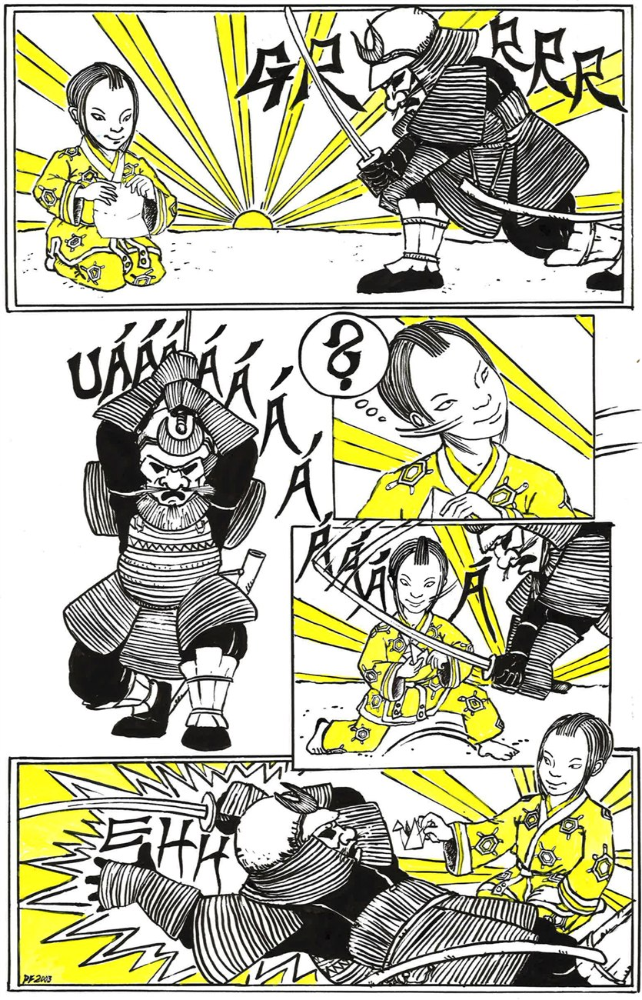
Nejstarší kousek v celé kronice: kamarád nakreslil čtyři postavy pro naše dójó, ještě dřív než měl klub vlastní web. Všechny čtyři jsou v kapitole Kresba.
Na nově otevřeném dójó proběhl první trénink. Prvním instruktorem byl sensei Michal „Lachim“ Šíp (2. dan), na organizaci se podílel také Radek Růžička.
Skupina nadšenců přeměnila bývalou tiskařskou halu na cvičební prostor. Vzniklo tak dójó, které neslo jméno „Na Cestě“, podle cesty (dó), kterou aikido i jóga představují.
Aikido je nenásilné moderní japonské bojové umění, které rozvíjí tělo i ducha. Na našem dójó se mu věnujeme spolu s jógou už od roku 2004, kdy jsme původní tiskárnu přeměnili na cvičební prostor.
Nejde nám o soupeření ani výkon — cvičení u nás je spíše životní filosofií, která rozvíjí rovnováhu, sebedůvěru a klid.
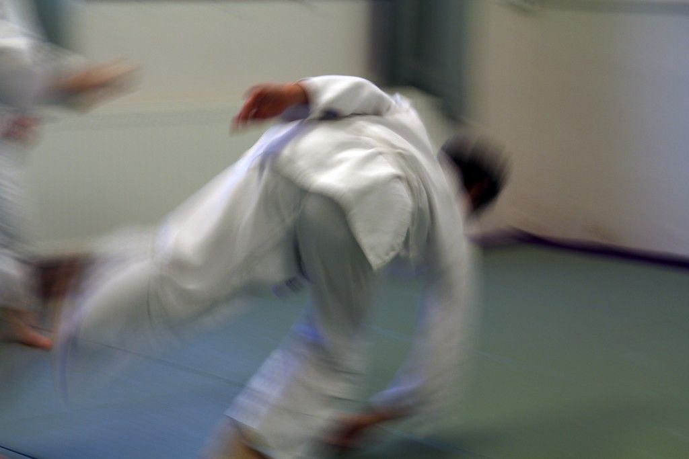
Jsme parta lidí, co rádi cvičí nenásilnou cestou. Dójó Na Cestě je místo pro každého… Nebo, skoro každého… Nakonec vydrží málokdo. Cvičíme zde jógu a aikido.
Co tomu však předcházelo? Nahlédněme společně do krátké historie. Přibližně v září 2004 se několik nadšenců pro aikido rozhodlo přetvořit halu tehdejší tiskárny SKALA a zvelebit ji natolik, aby se v jejích prostorách o několik měsíců později mohl uskutečnit první trénink. Vše se zdárně podařilo a v prosinci jsme se tu společně sešli na zahajovacím slavnostním cvičení. Patří velké poděkování všem těm nadšencům, kteří ostatně dodnes téměř všichni aikido cvičí. Je třeba také zmínit Českou Federaci Aikido (ČFAI), pod kterou je náš klub organizován. Nemůžeme vynechat ani město Říčany, které nám formou grantu částečně přispělo na nákup tatami. Největší poděkování si ale zaslouží náš sensei (učitel) Michal Lachim Šíp – tehdejší 2. dan Hombu Dojo (mistrovský stupeň), který nás vyučoval aikido od samého začátku. V jeho stopách šel pak i Radek Růžička a v současné době je to Miroslav Skala, 2. dan Hombu Dojo. Velké poděkování všem.
Samotné jméno aikido spojuje tři znaky: ai (harmonie), ki (životní energie) a dó (cesta).
Aikido je nenásilné moderní japonské bojové umění, které rozvíjí tělo i ducha. Jeho název spojuje tři znaky: ai (harmonie), ki (životní energie) a dó (cesta).
Založil ho Morihei Ueshiba (1883–1969) jako umění, které klade důraz na mentální i fyzický rozvoj a odmítá soutěžní pojetí. Pro mnohé praktikující se tak aikido stává jakousi životní filosofií.
Na dójó Na Cestě cvičíme Rádža jógu. Cvičení je vhodné pro každého a nevyžaduje žádné speciální vybavení — stačí pohodlný oděv a trocha vůle cvičit. Pravidelná praxe přináší:
Stejná cesta, čtyři vstupy. Nábor probíhá celý rok. Najeďte myší na kartu, klikněte pro detail.
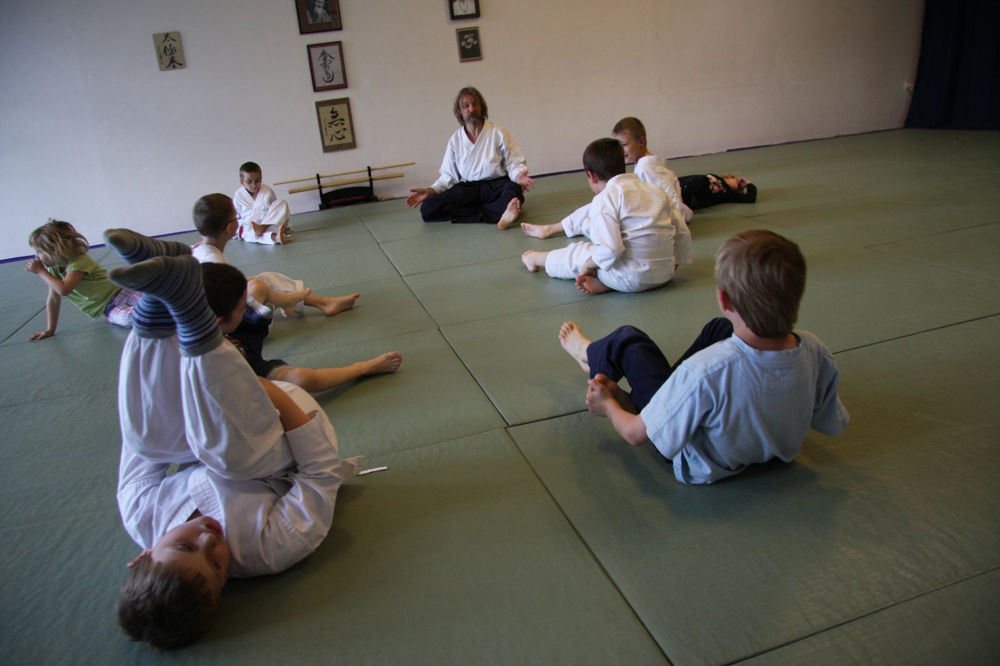
Cvičení na téma Aikido a Jóga pro předškolní děti a také prvňáčky, s učitelem, který u nás cvičí s dětmi již od počátků našeho sdružení a je certifikovaným lektorem jógy. Děti si tak budou zvykat na práci v kolektivu a získávat správné morální a etické návyky a také se zbavovat strachu a získávat větší sebejistotu.
Zjistit více →
Náš oddíl je veden tak, aby v něm mohli spolu cvičit jak děti školního věku tak mládež, jak úplní začátečníci tak pokročilí, chlapci i děvčata. Praktikujeme i rozsáhlý program dechových cvičení. Zapojit se může každý kdykoli v průběhu roku. Stačí si přinést tepláky, tričko s dlouhým rukávem a začít.
Zjistit více →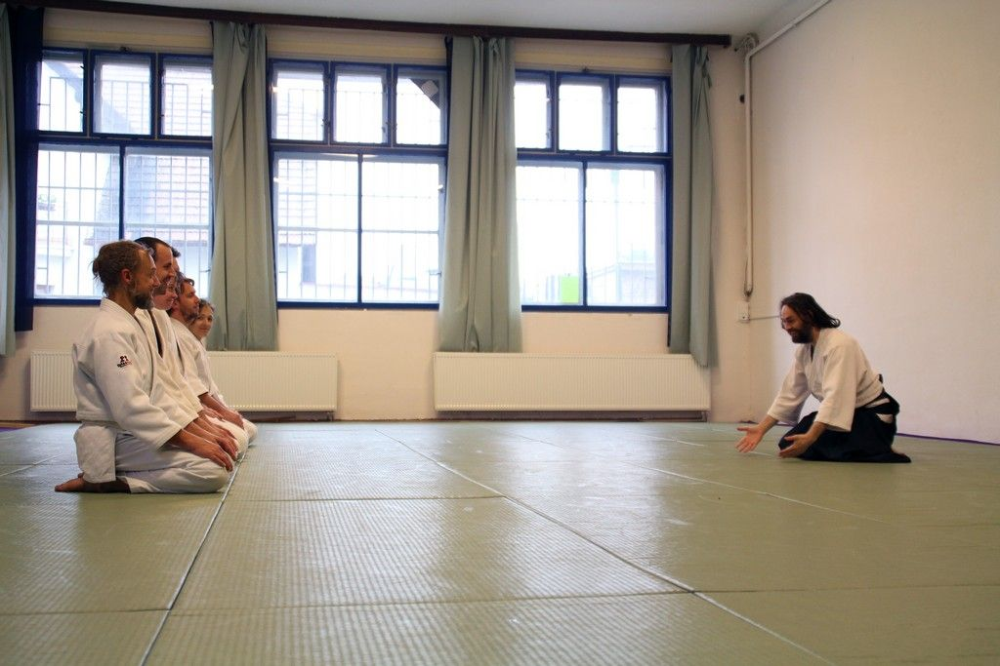
Nábor probíhá průběžně celý rok. Zpočátku nebudete potřebovat žádné speciální vybavení, na první trénink si doneste jen tepláky bez zipu a tričko s dlouhým rukávem. První trénink je zdarma. Pokud se bojíte, že jste na aikido už příliš staří, jsou vaše obavy zcela neopodstatněné.
Zjistit více →
Cvičíme Rádža jógu. Cvičení je vhodné pro každého a budeme rádi, když se k nám připojíte. Nebudete potřebovat žádné speciální vybavení, jen pohodlný oděv a trochu vůle cvičit.
Zjistit více →Jóga 8:15–9:40
Jóga 16:30–17:30
Aikido děti 17:30–18:50
Aikido dospělí 19:15–21:00
Jóga 8:15–9:40
Píďata 16:00–17:00
Aikido děti 17:30–18:50
Aikido dospělí 19:15–21:00
Od 0 Kč výš. Je to na vás — kolik cvičení pro vás má hodnotu a kolik si zrovna můžete dovolit. Chceme, aby to bylo dostupné opravdu každému, bez výjimky a bez čísel, která by to za vás rozhodovala.
Podívejte se, jak trénujeme.

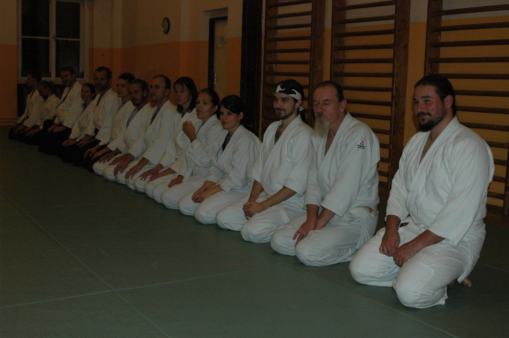
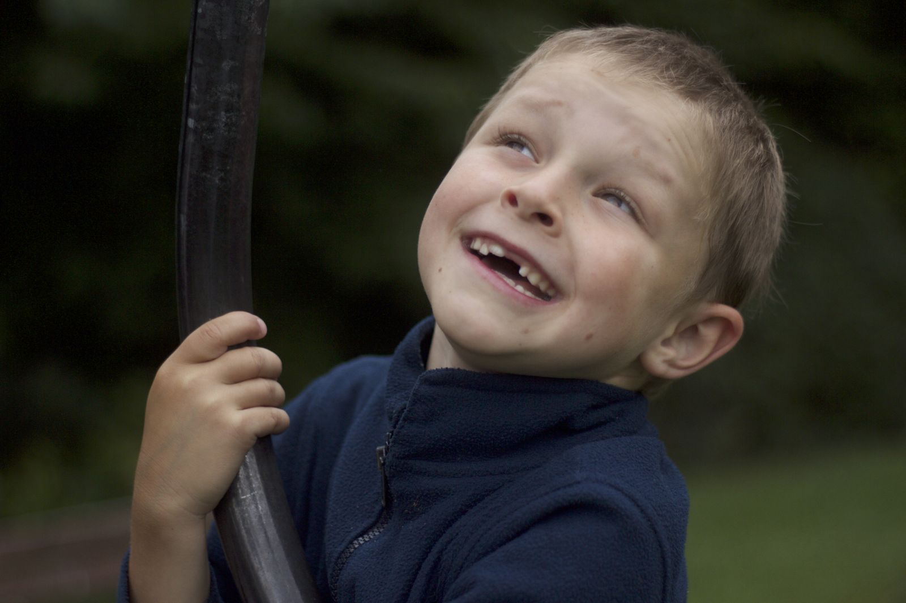
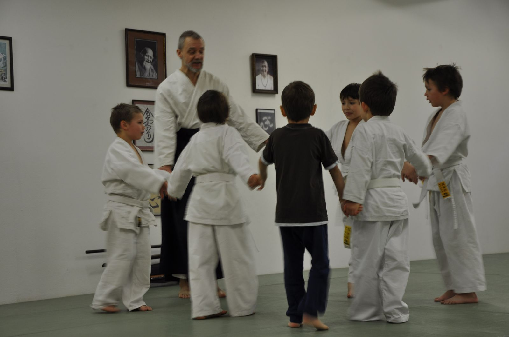
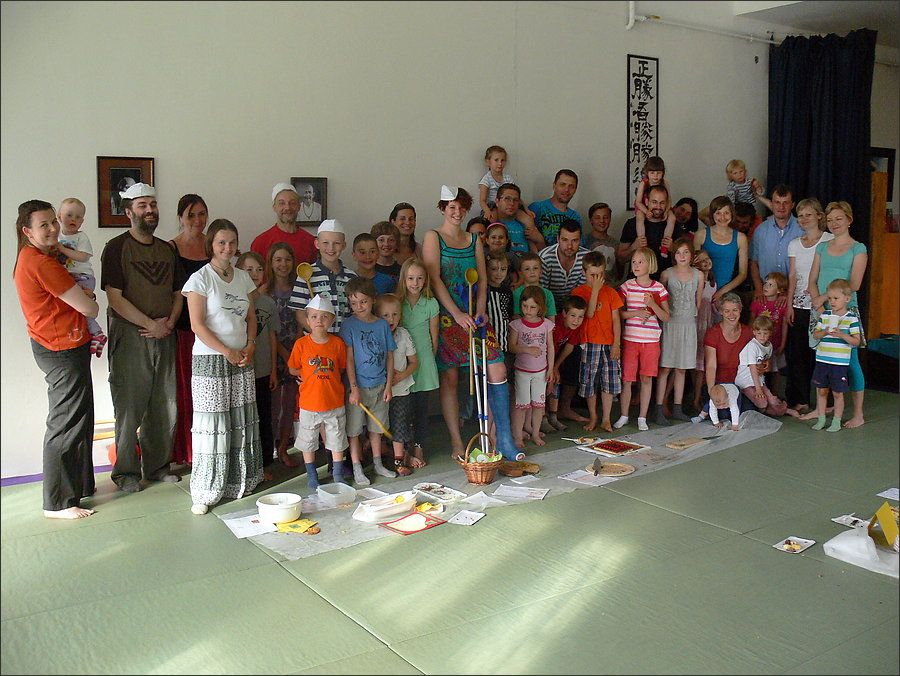
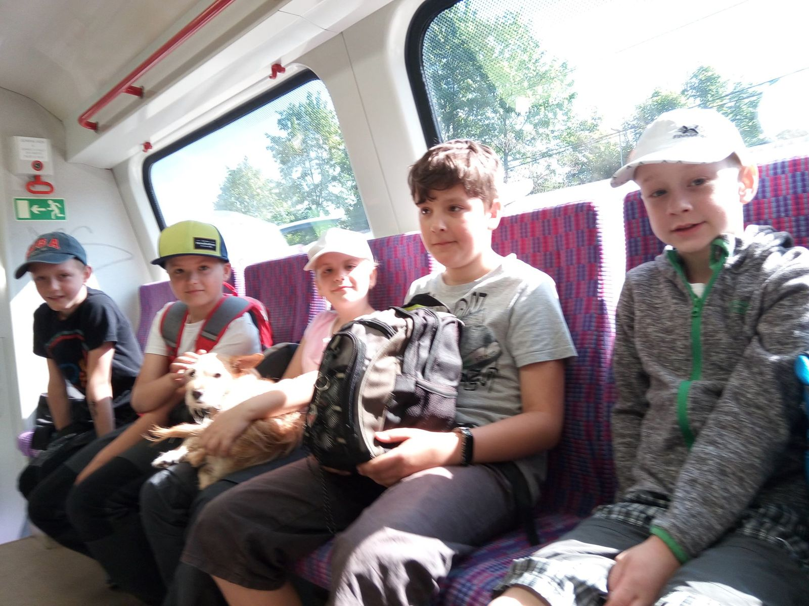
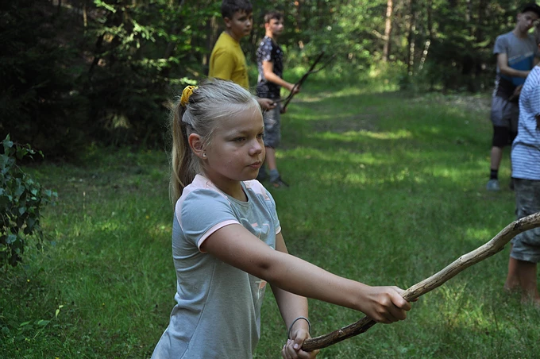
Kolečkem nebo tažením listuješ sbírkami. Klikni na sbírku pro všechny fotky.
Čtyři postavy od kamaráda dójó, nakreslené v roce 2003, ještě dřív než klub měl vlastní web.
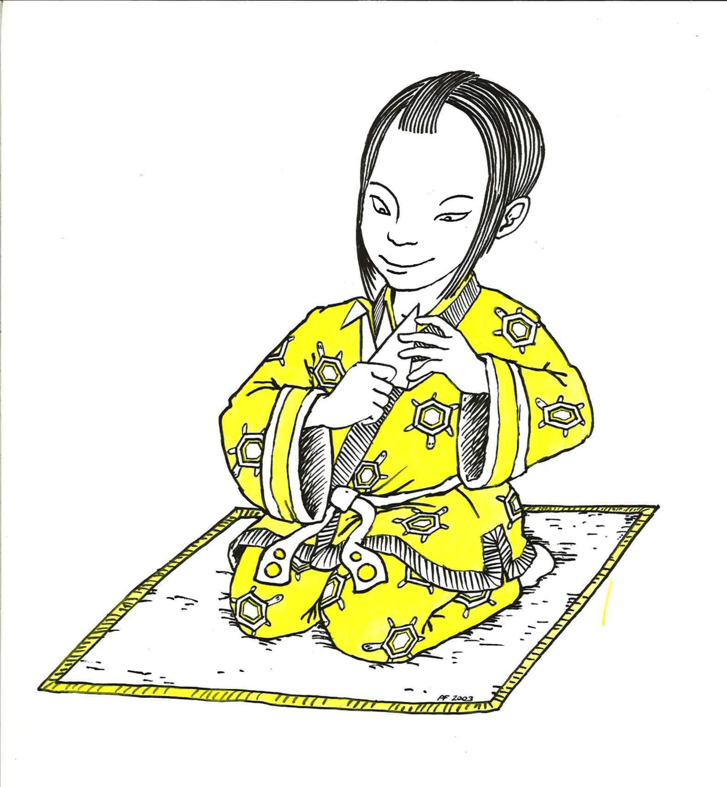
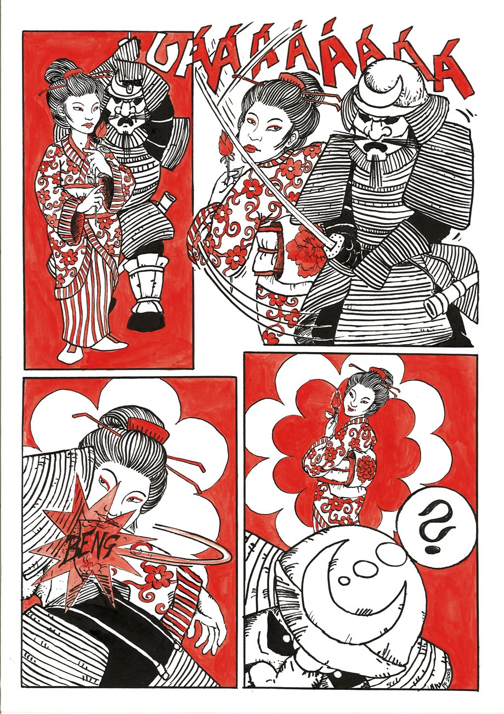
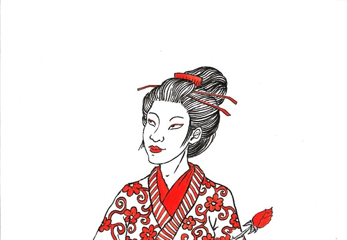
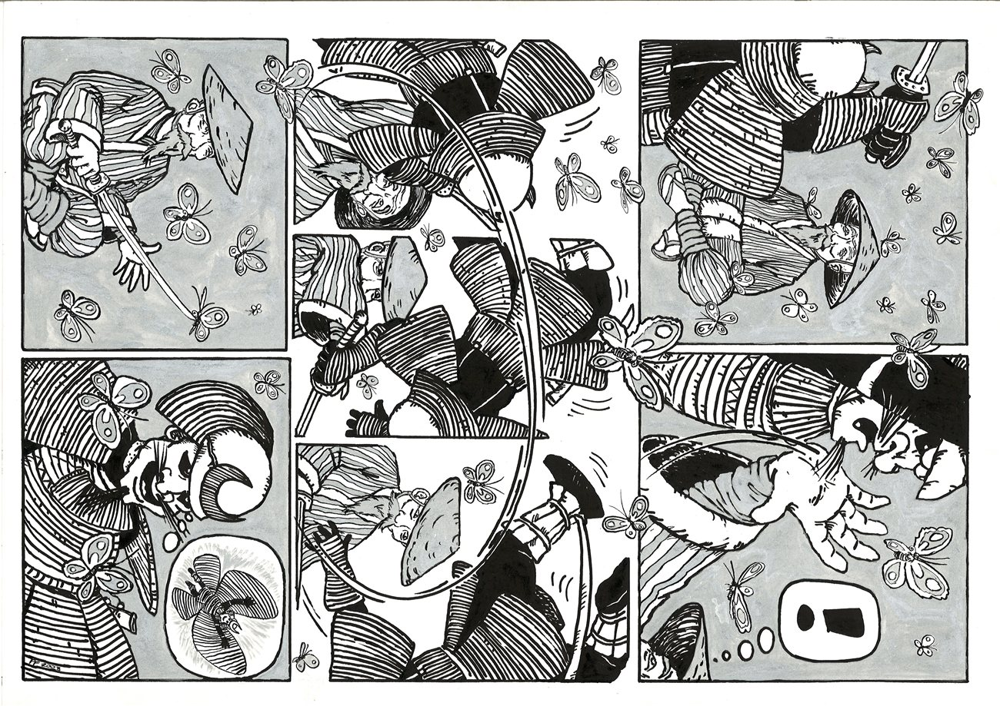
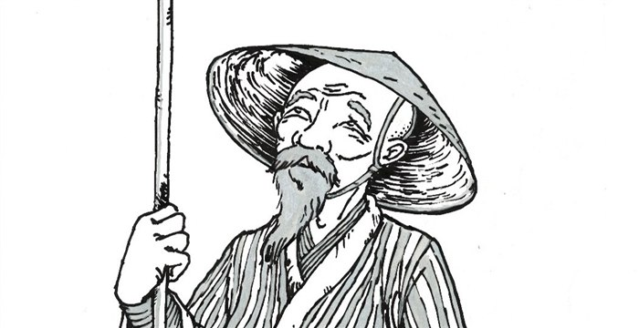
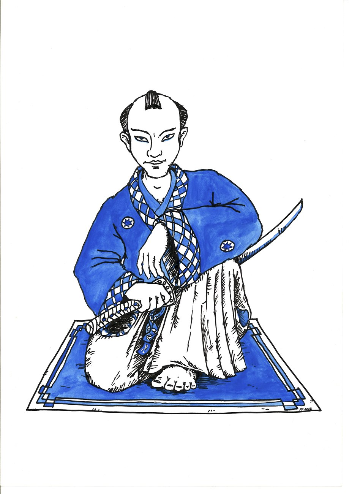
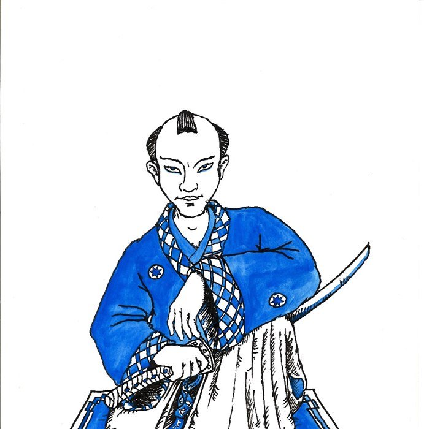
Dójó Na Cestě, Říčany. Aikido a jóga od roku 2004.
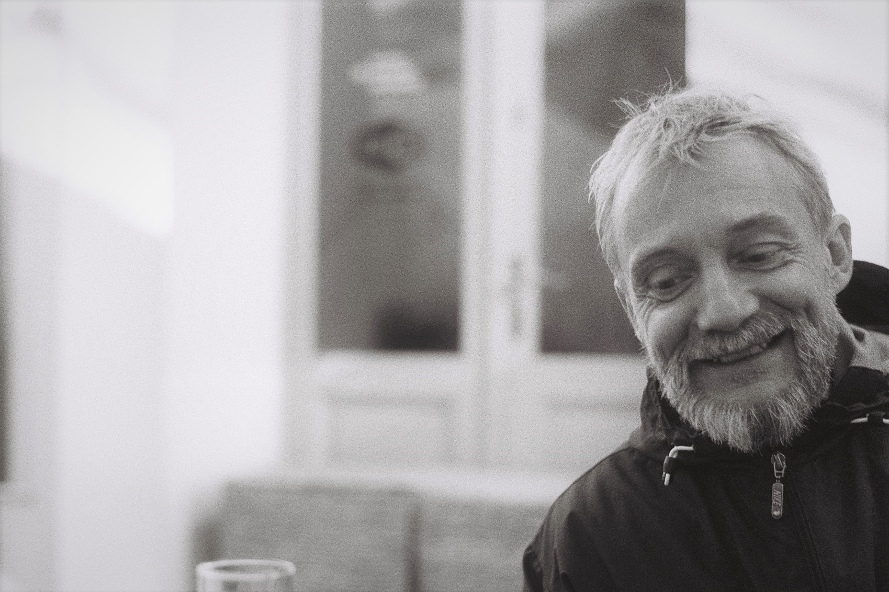